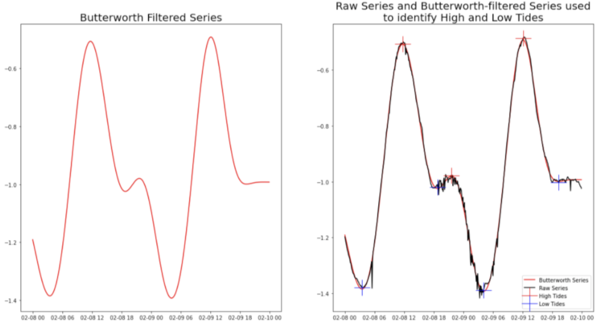
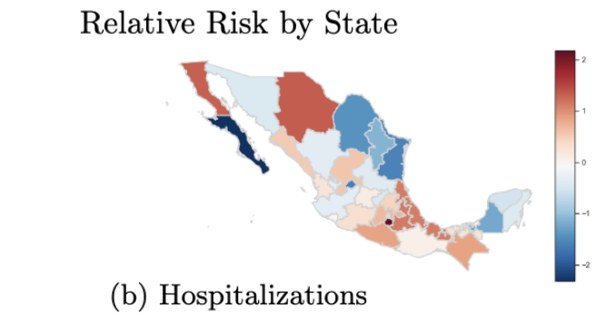
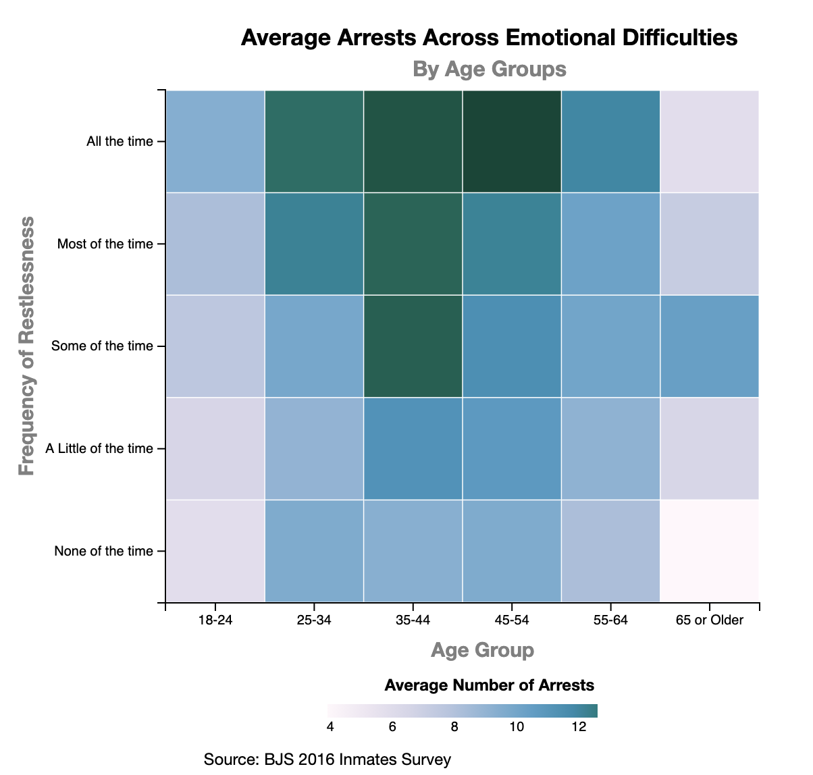
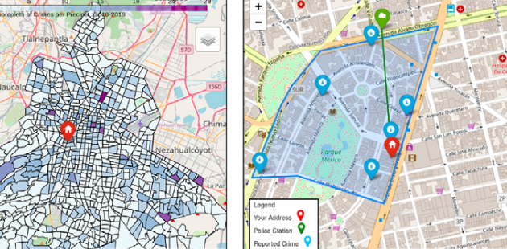
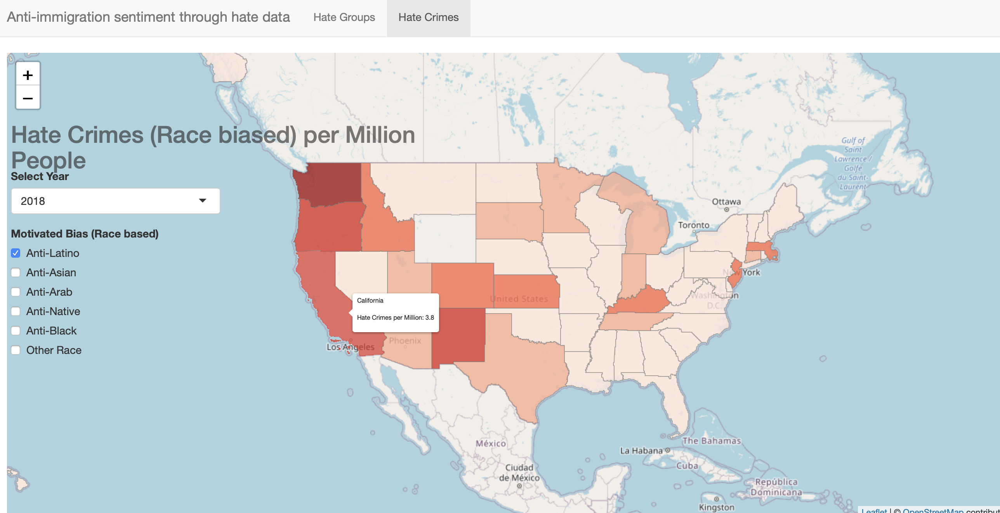

ABOUT ME
Mexicana.
I'm currently studying data science and public policy in the
M.S. in Computational Analysis and Public Policy
at The University of Chicago.
(Thanks to the support of CONACYT, UChicago, P.E.O.
International, FUNED).
My current interests are the applications of data science (particularly, machine learning methods
and human-AI interaction) that aim to address social issues such as social inequality gaps (e.g. health care
access, gender income gaps), crime prevention and government transparency.
Previously, I was an economist in the Central Bank of Mexico doing monetary policy research.
Here's my full CV.
PROJECTS
Hohonu: Water Level Anomaly Detection and Prediction
Civic Data & Technology Clinic

With Charlie Sheils and MengChen Chung, we built a data pipeline to clean, calibrate and predict water level data of coastal monitoring stations from Hohonu, an early-stage venture that measures and predicts water levels to assists communities harmed by frequent flooding through low-cost, solar-powered hardware.
COVID-19 in Mexico: Predicting severe disease outcomes using health and socioeconomic variables.
To join the efforts to fight COVID-19, along with Roberto Barroso, Steph Ramos and Oscar Noriega, I studied and predicted severe disease outcomes for COVID-19 patients in Mexico . The predictions were useful in developing a relative risk index between Mexican states.
Chronic Crime Behavior through the lens of Mental Health and Other Social Dimensions
In an effort to further study and address mass incarceration in the U.S., we examine the rates of recidivism across several social dimensions such as mental illness prevalence, emotional difficulties and family conditions (e.g. foster care, homelessness), using the data from the BJS 2016 Inmates Survey.
Mapping Crimes at a Certain Day and hour with Mexico City Crime Data (Using DJANGO and SQLITE)
Motivated by the growing crime incidence in Mexico City (CDMX), this web-app aims to provide the user information on the number of crimes that happened at a specified place, day of the week, and hour, with the purpose of the user potentially taking certain precautions when going to a specified area given that time and day of the week.
Climate Change Educational Game
Through Unity and #C, Kelsey Anderson and I built an Educational video game about Climate Change for 10 to 12-year-olds. The goal is to provide the children with an understanding of how their behaviors in daily life relate to the global environment.
Understanding the Anti-immigration sentiment in the U.S. with hate-crime data
Given the rise in anti-immigrant sentiment in recent years, I analyze the evolution of hate groups and crimes against the immigrant community in the United States. In this analysis, I was able to identify risk regions characterized by a greater number of groups or hate crimes per million population. Also, I developed a simple Shiny dashboard to represent this data.